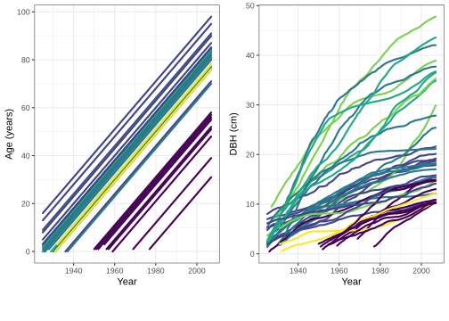

Chapter 6 Data summary and analysis using the tidyverse
This chapter opens a suite of chapters that cover packages, collectively known as the tidyverse, designed explicitly for data science. In the book R for Data Sciences (Wickham, Çetinkaya-Rundel, and Grolemund 2023) the lead author Hadley Wickham, a key developer of many tidyverse packages, promotes a common grammar and function structure to simplify and streamline data manipulation and analysis. Here, the focus is on automating time-consuming, tedious, and routine data wrangling and data summary tasks, as well as creating publication-quality plots, graphics, and tables that effectively summarize and communicate analysis results.
Some seasoned R users prefer to work almost exclusively with base R and not to use tidyverse packages, while others live almost exclusively in the tidyverse. With its ever expanding functionality, documentation, and user community, we find ourselves happy spending more time cruising the tidyverse. We don’t view base R and tidyverse as mutually exclusive, but rather as complementary tools. To this end, the next several chapters highlight tidyverse packages we use most frequently when analyzing forestry data. We strongly encourage you to learn base R as well as tidyverse, and use whatever functions you find most intuitive and convenient to accomplish the tasks at hand. A more comprehensive overview of the tidyverse is given by Wickham, Çetinkaya-Rundel, and Grolemund (2023) and other resources can be found at . We focus our tour around the tidyverse to the following five packages:
tibble: improving on the data frame (Chapter 6),readr: reading and writing files (Chapter 6),dplyr: manipulating and summarizing (Chapter 7),tidyr: cleaning and reshaping (Chapter 8),ggplot2: creating graphics (Chapter 9).
In this chapter, we will discuss the tibble and readr packages, which provide new ways to store, read, and write data. The entire tidyverse can be installed and loaded at once using the code below (which may take a few minutes if you don’t have the packages installed).
Immediately after running library(tidyverse) you might get some messages about masking printed to your console. Masking occurs when two or more packages have objects (e.g., functions) with the same name. The masking messages tell you which package takes precedence when you call an object name. For instance, the stats package is loaded automatically when you start R. This package includes a filter() and lag() function. The tidyverse package dplyr also includes functions named filter() and lag(). Due to these common names, the stats package functions are masked, such that a call to filter() will use dplyr’s filter() function. Use the :: operator to explicitly identify the package from which you want to call a function, e.g., if you want stats’s filter() then call stats::filter().
6.1 Minnesota tree growth dataset
We motivate methods presented in this and subsequent tidyverse chapters using a dendrochronological dataset described in Foster, D’Amato, and Bradford (2014) and subsequently reanalyzed by Itter et al. (2017). The data, collected in northeastern Minnesota, comprise growth ring widths for 2,291 trees. We refer to a tree’s growth ring measurements over time as its chronology. A chronology describes a tree’s history of growth, suppression, and release. Chronologies can help us understand effects of age, natural disturbance, and silvicultural treatment on trees and stands, see, e.g., Itter et al. (2017). Chronologies in this dataset all end in 2007 and some start as far back as 1897. The growth ring width measurements were taken from increment cores extracted at DBH using an increment borer. Crossdating, i.e., assigning a year and tree age to each growth ring, was done using standard dendrochronological techniques (see, e.g., Bunn 2010 for crossdating methods and R tools). Trees were located in 105 plots distributed across 35 forest stands (3 plots per stand). Each stand represented an area with similar species composition and approximately homogeneous forest characteristics (e.g., tree density, size distribution, age distribution).
With a total of 131,386 ring width measurements over the 2,291 trees, the dataset is quite large; hence, we’ll work with a subset that includes only the first five stands.34 The “mn_trees_subset.csv” file, read into the mn_trees data frame below, contains each tree’s species (species; species codes are defined in Table 6.1), year (year) coinciding with the tree’s age (age), and increment core derived measurements of annual radial growth increment (rad_inc; annual growth ring width in mm) and diameter at breast height (DBH; end of growing season inside bark in cm). The data frame also includes an identification number for stand, plot, and tree, i.e., stand_id, plot_id, and tree_id, respectively. A tree’s measurements are uniquely identified by the combination of stand_id, plot_id, and tree_id values (i.e., tree numbers are unique within plot and plot numbers are unique within stand).
| ABBA | LALA | PIST |
| ACRU | PIGL | POGR |
| ACSA | PIMA | POTR |
| BEPA | PIBA | QURU |
| FRNI | PIRE | THOC |
In the spirit of tidyverse, we use the dplyr package’s glimpse() function—a flexible alternative to str() introduced in Chapter 7—to preview the dataset’s columns.
#> Rows: 11,649
#> Columns: 8
#> $ stand_id <int> 1, 1, 1, 1, 1, 1, 1, 1, 1, 1, 1, 1, …
#> $ plot_id <int> 1, 1, 1, 1, 1, 1, 1, 1, 1, 1, 1, 1, …
#> $ tree_id <int> 1, 1, 1, 1, 1, 1, 1, 1, 1, 1, 1, 1, …
#> $ year <int> 1960, 1961, 1962, 1963, 1964, 1965, …
#> $ species <chr> "ABBA", "ABBA", "ABBA", "ABBA", "ABB…
#> $ age <int> 1, 2, 3, 4, 5, 6, 7, 8, 9, 10, 11, 1…
#> $ rad_inc <dbl> 0.930, 0.950, 0.985, 0.985, 0.715, 0…
#> $ DBH <dbl> 2.1563, 2.3463, 2.5433, 2.7403, 2.88…Notice, in addition to printing the data frame’s dimensions (i.e., number of rows and columns), glimpse prints each column’s date type35 and first several values. The $ preceding each column name is reminiscent of how data frame column vectors are accessed, e.g., mn.trees$stand_id (see Section 4.5.1).
#> Warning in get_plot_component(plot, "guide-box"):
#> Multiple components found; returning the first one. To
#> return all, use `return_all = TRUE`.
FIGURE 6.1: Tree increment core derived age and diameter at breast height (DBH) by year for trees in mn.trees Stand 5.
To gain a better sense of the mn_trees data, Figure 6.1 plots tree age (left) and DBH growth (right) over time for trees measured in one stand. The left figure shows that several trees were well established at the start of the chronology in 1897, the oldest among them being a 16 year old Betula papyrifera. This figure also shows that most of the Abies balsamea entered the stand after 1950, with the youngest being established in 1977. The right figure shows tree chronologies have varying growth rates, which are functions of species, age, density, and other tree and stand factors.36
6.2 Improving data frames with tibbles
We begin our tour around the tidyverse with the tibble package, which provides an improved data frame called a tibble. Running library(tidyverse) automatically loads the tibble package (i.e., you don’t need to run library(tibble)).
Like data.frame() defined in Section 4.5, given a set of vectors tibble() returns a tibble. The code below creates a tibble called trees that we’ll use to demonstrate dplyr functions in subsequent sections.37
trees <- tibble(id = as.integer(c(1, 1, 2, 2, 3)),
year = as.integer(c(2020, 2021, 2020, 2021, 2021)),
dbh = c(1.9, 2.1, 5.2, 5.5, 0.5))Think of trees as a mini version of the Minnesota tree growth dataset mn_trees created back in Section 6.1. The trees dataset comprises measurements for three trees with columns holding unique tree identification number (id), measurement year (year), and DBH in inches (dbh). As you can see below, trees 1 and 2 have DBH measurements in years 2020 and 2021, whereas tree 3 was only measured in 2021.
#> Rows: 5
#> Columns: 3
#> $ id <int> 1, 1, 2, 2, 3
#> $ year <int> 2020, 2021, 2020, 2021, 2021
#> $ dbh <dbl> 1.9, 2.1, 5.2, 5.5, 0.5If you have an existing data frame (e.g., created when data are read in from a file, Section 3.3.2), as_tibble() converts it to a tibble. Importantly, a tibble is simply a wrapper around a data frame that provides some different printing, subsetting, and recycling behaviors. This last point is illustrated below using a few test functions on the mn_trees_tbl tibble created from the Minnesota tree growth data frame mn_trees.
mn_trees_tbl <- as_tibble(mn_trees) # Convert to a tibble.
is_tibble(mn_trees_tbl) # Confirm it's a tibble.#> [1] TRUE#> [1] TRUEA tibble has two key advantages over a data frame. First, when printing, its default behavior is to print the first ten rows and the columns that fit in the console window, as well as some additional information such as dimension (i.e., number of rows and columns), data types, and non-printed column names (e.g., because the DBH column did not fit in the console window below, DBH <dbl> is listed in the last line of output).
#> # A tibble: 11,649 × 8
#> stand_id plot_id tree_id year species age rad_inc
#> <int> <int> <int> <int> <chr> <int> <dbl>
#> 1 1 1 1 1960 ABBA 1 0.93
#> 2 1 1 1 1961 ABBA 2 0.95
#> 3 1 1 1 1962 ABBA 3 0.985
#> 4 1 1 1 1963 ABBA 4 0.985
#> 5 1 1 1 1964 ABBA 5 0.715
#> 6 1 1 1 1965 ABBA 6 0.84
#> 7 1 1 1 1966 ABBA 7 0.685
#> 8 1 1 1 1967 ABBA 8 0.94
#> 9 1 1 1 1968 ABBA 9 1.16
#> 10 1 1 1 1969 ABBA 10 0.775
#> # ℹ 11,639 more rows
#> # ℹ 1 more variable: DBH <dbl>print(), with its default behavior, is invoked implicitly when the tibble object name is run on the console, as shown above. If you want a different print behavior, then explicitly call print() with the arguments adjusted as desired. For example, the call to print() below includes arguments n = 2 and width = Inf to print mn_trees_tbl’s first two rows and all columns, respectively.
#> # A tibble: 11,649 × 8
#> stand_id plot_id tree_id year species age rad_inc
#> <int> <int> <int> <int> <chr> <int> <dbl>
#> 1 1 1 1 1960 ABBA 1 0.93
#> 2 1 1 1 1961 ABBA 2 0.95
#> DBH
#> <dbl>
#> 1 2.16
#> 2 2.35
#> # ℹ 11,647 more rowsIf you want to print all rows, but don’t know how many rows there are, then use nrow(), e.g., print(mn_trees_tbl, n = nrow(mn_trees_tbl)).
Second, recall from Section 4.5, a data frame subset operation that results in a single column is simplified to a vector. This might not seem like a big deal; however, it can be very frustrating and potentially break your code when you expect an object to behave like a data frame and it doesn’t because it’s now a vector. The tibble doesn’t have this behavior, a subset resulting in one column is still a tibble. The code below illustrates these different behaviors.
#> [1] FALSE#> [1] TRUE#> [1] TRUEAs always, consult the package manual page to learn more about its functions (run ?tibble::tibble-package). Also, run browseVignettes(package="tibble") in the console to access the vignettes in the tibble package. Specifically, take a look at vignette(package="tibble") to understand the different value recycling rules applied when constructing data frames and tibbles.
Functions in tidyverse packages are happy to work with either data frames or tibbles. Because we prefer their print and subset behavior, we’ll generally work with tibbles moving forward.
6.3 Reading and writing files with readr
In Section 3.3.2, we introduced several base R functions for reading and writing plain-text flat files, e.g., read.table(), write.table(), read.csv(), write.csv(). As we’ve seen, these functions read external data into a data frame, and write a data frame to an external file.
As with the tibble package introduced in Section 6.2, tidyverse packages aim to provide improved functionality and flexibility over base R. In this spirit, the readr package offers alternative functions for reading and writing plain-text flat files. The package’s read and write functions provide a rich and flexible set of arguments to accommodate different column delimiters, data types, and file formats. Like equivalent functions in base R, readr provides a set of read and write functions for common column delimiters, including read_table() for white space, read_csv() for comma, and read_tsv() for tab. The read_delim() function reads files with any user defined delimiter. Like base R, readr read functions have corresponding write functions.
When consulting the readr manual page (run ?readr::read_delim), you’ll notice many function arguments are the same as those in equivalent base R functions—this means minimal changes are needed to migrate from base R to readr functions, e.g., swapping read.csv() with read_csv(). The package’s vignette, accessed by running vignette("readr") in the console, offers an in-depth tour of the packages’s capabilities.
Here are a few good reasons to favor readr functions over equivalent base R functions.
- Read functions return a
tibblewith all its added niceties, see, Section 6.2. - Messages and warnings are often helpful for diagnosing file formatting issues.
- A progress bar provides file read and write speed.
- Information about the file being read is printed to the console, e.g., number of rows and columns, delimiter, and column data types.
- Depending on the dataset, read and write functions are up to 100x faster. This is particularly helpful when working with large files.
- Read functions are often able to guess column data type, and it’s easy to specify data type if guessed incorrectly.
- Non-syntactic column names (see Section 3.2.2) are preserved by placing them within backticks. Base R read functions modify non-syntactic names to make them syntactic (see Section 3.3.2 for details).
The code below uses read_csv() to read the Minnesota tree growth dataset into the mn_trees tibble.
library(readr) # Or loaded automatically with library(tidyverse).
mn_trees <- read_csv("datasets/mn_trees_subset.csv")#> Rows: 11649 Columns: 8
#> ── Column specification ─────────────────────────────────────────────────────────────────────────────────────────────────────────────────────────────────────────────────────────────────────────────────────────────
#> Delimiter: ","
#> chr (1): species
#> dbl (7): stand_id, plot_id, tree_id, year, age, rad...
#>
#> ℹ Use `spec()` to retrieve the full column specification for this data.
#> ℹ Specify the column types or set `show_col_types = FALSE` to quiet this message.Notice above, the data dimension, delimiter, and column data types are printed after calling read_csv(). Also two informational messages are printed. The first says spec() provides a description of column data types (i.e., run spec(mn_trees)). The second says data types can be specified if needed and set the read function argument show_col_types to FALSE if you don’t want information printed while reading.
Although not strictly necessary for our subsequent use of mn.trees, let’s go ahead and specify the integer columns. Consult the readr vignette and manual page to understand the col_types arguments used below.
mn_trees <- read_csv("datasets/mn_trees_subset.csv",
col_types = list(stand_id = col_integer(),
plot_id = col_integer(),
tree_id = col_integer(),
year = col_integer(),
age = col_integer()
)
)
spec(mn_trees) # Confirm data types.#> cols(
#> stand_id = col_integer(),
#> plot_id = col_integer(),
#> tree_id = col_integer(),
#> year = col_integer(),
#> species = col_character(),
#> age = col_integer(),
#> rad_inc = col_double(),
#> DBH = col_double()
#> )#> Rows: 11,649
#> Columns: 8
#> $ stand_id <int> 1, 1, 1, 1, 1, 1, 1, 1, 1, 1, 1, 1, …
#> $ plot_id <int> 1, 1, 1, 1, 1, 1, 1, 1, 1, 1, 1, 1, …
#> $ tree_id <int> 1, 1, 1, 1, 1, 1, 1, 1, 1, 1, 1, 1, …
#> $ year <int> 1960, 1961, 1962, 1963, 1964, 1965, …
#> $ species <chr> "ABBA", "ABBA", "ABBA", "ABBA", "ABB…
#> $ age <int> 1, 2, 3, 4, 5, 6, 7, 8, 9, 10, 11, 1…
#> $ rad_inc <dbl> 0.930, 0.950, 0.985, 0.985, 0.715, 0…
#> $ DBH <dbl> 2.1563, 2.3463, 2.5433, 2.7403, 2.88…It’s good practice to specify columns’ data type—as illustrated above—because it forces you to think about how your data is represented and how it will enter into subsequent analysis. We’ll use readr functions throughout the remainder of the book (but we’ll often be lazy and not specify column data types).
6.4 Summary
This chapter opens a series of chapters that introduce a suite of packages collectively referred to as the tidyverse. As you’ll see, these packages provide tools to efficiently manipulate, analyze, and graphically represent data. Most tasks completed using tidyverse can also be accomplished using base R functions; however, tidyverse provides (arguably) more intuitive and easier to apply solutions within a unified framework.
In this chapter, we introduced the tibble and readr tidyverse packages. A tibble is a wrapper38 around a data frame that provides some different behaviors, particularly when printing and subsetting. The tidyverse packages covered in subsequent chapters work with either tibbles or data frames; however, the tibble’s added niceties make them our preferred option. We briefly covered readr package functions for reading and writing flat files. Like the tibble package, readr provides alternatives to base R functions.
Our tour of the tibble, readr, and subsequent tidyverse packages is woefully incomplete. We’re not able to cover all the important package details or behaviors you’ll likely encounter in applications. Rather, to get you pointed in the right direction, we focus on an introduction and some reasonably realistic examples. Given the common grammar and function structure throughout packages in the tidyverse, our introduction should make it easier to learn additional tidyverse packages for your specific data analysis needs. Manual pages, vignettes, Google searches that connect you to user forums, and excellent books by package authors such as Wickham, Çetinkaya-Rundel, and Grolemund (2023) are critical learning resources on your journey through the tidyverse.
6.5 Exercises
Exercise 6.1 Use the data in Table 4.2 to create a data frame using data.frame() called stands_df and a tibble using tibble() called stands_tbl. While creating the data frame and tibble, be sure to set the stand and age columns to integers using as.integer() as illustrated in Section 6.2. Print both stands_df and stands_tbl to confirm the data were entered correctly. Also, use either base R’s str() or dplyr’s glimpse() to confirm the columns have the desired data type.
Exercise 6.2 class() will show that stands_tbl is a tibble (i.e., run class(stands_tbl)). What are two other ways you can check that stands_tbl is a tibble?
Exercise 6.3 How do the objects returned by the following operations differ? Why might this difference cause unexpected behavior in subsequent operations?
Exercise 6.4 Use write_csv() to write stands_tbl to a file called “stands_tbl.csv”. Then, read “stands_tbl.csv” using read_csv() with the appropriate col_types arguments and assign the resulting tibble to stands_tbl_2. Use the dplyr package’s all_equal() function to confirm the two tibbles are the same (i.e., all_equal(stands_tbl, stands_tbl_2) should be TRUE).
References
While R has no trouble working with the full dataset on most computers, we use a subset to accommodate computers with limited resources. The full dataset used by Itter et al. (2017) is available in “datasets/mn_trees.csv”.↩︎
Integer, double, character, logical, and factor data types introduced in Chapter 4, are indicated using
<int>,<dbl>,<chr>,<lgl>and<fct>, respectively.↩︎While not critical for our use of
trees, we coerce the numericidandyearvectors from double to the more appropriate integer data type, see Section 4.2.1.↩︎A wrapper is a function that encapsulates other objects and/or functions in a user-friendly and potentially more flexible interface.↩︎